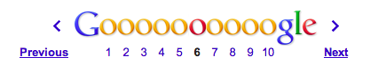

Using Zend\Paginator in your Album Module¶
In this tutorial we will use the Zend\Paginator component to add a handy pagination controller to the bottom of the album list.
Currently, we only have a handful of albums to display, so showing everything on one page is not a problem. However, how will the album list look when we have 100 albums or more in our database? The standard solution to this problem is to split the data up into a number of pages, and allow the user to navigate around these pages using a pagination control. Just type “Zend Framework” into Google, and you can see their pagination control at the bottom of the page:
Preparation¶
In order for us to have lots of albums in our database, you’ll need to run the following SQL insert statement to insert the current 150 top iTunes albums (at the time of writing!):
INSERT INTO `album` (`artist`, `title`)
VALUES
('David Bowie', 'The Next Day (Deluxe Version)'),
('Bastille', 'Bad Blood'),
('Bruno Mars', 'Unorthodox Jukebox'),
('Emeli Sandé', 'Our Version of Events (Special Edition)'),
('Bon Jovi', 'What About Now (Deluxe Version)'),
('Justin Timberlake', 'The 20/20 Experience (Deluxe Version)'),
('Bastille', 'Bad Blood (The Extended Cut)'),
('P!nk', 'The Truth About Love'),
('Sound City - Real to Reel', 'Sound City - Real to Reel'),
('Jake Bugg', 'Jake Bugg'),
('Various Artists', 'The Trevor Nelson Collection'),
('David Bowie', 'The Next Day'),
('Mumford & Sons', 'Babel'),
('The Lumineers', 'The Lumineers'),
('Various Artists', 'Get Ur Freak On - R&B Anthems'),
('The 1975', 'Music For Cars EP'),
('Various Artists', 'Saturday Night Club Classics - Ministry of Sound'),
('Hurts', 'Exile (Deluxe)'),
('Various Artists', 'Mixmag - The Greatest Dance Tracks of All Time'),
('Ben Howard', 'Every Kingdom'),
('Stereophonics', 'Graffiti On the Train'),
('The Script', '#3'),
('Stornoway', 'Tales from Terra Firma'),
('David Bowie', 'Hunky Dory (Remastered)'),
('Worship Central', 'Let It Be Known (Live)'),
('Ellie Goulding', 'Halcyon'),
('Various Artists', 'Dermot O\'Leary Presents the Saturday Sessions 2013'),
('Stereophonics', 'Graffiti On the Train (Deluxe Version)'),
('Dido', 'Girl Who Got Away (Deluxe)'),
('Hurts', 'Exile'),
('Bruno Mars', 'Doo-Wops & Hooligans'),
('Calvin Harris', '18 Months'),
('Olly Murs', 'Right Place Right Time'),
('Alt-J (?)', 'An Awesome Wave'),
('One Direction', 'Take Me Home'),
('Various Artists', 'Pop Stars'),
('Various Artists', 'Now That\'s What I Call Music! 83'),
('John Grant', 'Pale Green Ghosts'),
('Paloma Faith', 'Fall to Grace'),
('Laura Mvula', 'Sing To the Moon (Deluxe)'),
('Duke Dumont', 'Need U (100%) [feat. A*M*E] - EP'),
('Watsky', 'Cardboard Castles'),
('Blondie', 'Blondie: Greatest Hits'),
('Foals', 'Holy Fire'),
('Maroon 5', 'Overexposed'),
('Bastille', 'Pompeii (Remixes) - EP'),
('Imagine Dragons', 'Hear Me - EP'),
('Various Artists', '100 Hits: 80s Classics'),
('Various Artists', 'Les Misérables (Highlights From the Motion Picture Soundtrack)'),
('Mumford & Sons', 'Sigh No More'),
('Frank Ocean', 'Channel ORANGE'),
('Bon Jovi', 'What About Now'),
('Various Artists', 'BRIT Awards 2013'),
('Taylor Swift', 'Red'),
('Fleetwood Mac', 'Fleetwood Mac: Greatest Hits'),
('David Guetta', 'Nothing But the Beat Ultimate'),
('Various Artists', 'Clubbers Guide 2013 (Mixed By Danny Howard) - Ministry of Sound'),
('David Bowie', 'Best of Bowie'),
('Laura Mvula', 'Sing To the Moon'),
('ADELE', '21'),
('Of Monsters and Men', 'My Head Is an Animal'),
('Rihanna', 'Unapologetic'),
('Various Artists', 'BBC Radio 1\'s Live Lounge - 2012'),
('Avicii & Nicky Romero', 'I Could Be the One (Avicii vs. Nicky Romero)'),
('The Streets', 'A Grand Don\'t Come for Free'),
('Tim McGraw', 'Two Lanes of Freedom'),
('Foo Fighters', 'Foo Fighters: Greatest Hits'),
('Various Artists', 'Now That\'s What I Call Running!'),
('Swedish House Mafia', 'Until Now'),
('The xx', 'Coexist'),
('Five', 'Five: Greatest Hits'),
('Jimi Hendrix', 'People, Hell & Angels'),
('Biffy Clyro', 'Opposites (Deluxe)'),
('The Smiths', 'The Sound of the Smiths'),
('The Saturdays', 'What About Us - EP'),
('Fleetwood Mac', 'Rumours'),
('Various Artists', 'The Big Reunion'),
('Various Artists', 'Anthems 90s - Ministry of Sound'),
('The Vaccines', 'Come of Age'),
('Nicole Scherzinger', 'Boomerang (Remixes) - EP'),
('Bob Marley', 'Legend (Bonus Track Version)'),
('Josh Groban', 'All That Echoes'),
('Blue', 'Best of Blue'),
('Ed Sheeran', '+'),
('Olly Murs', 'In Case You Didn\'t Know (Deluxe Edition)'),
('Macklemore & Ryan Lewis', 'The Heist (Deluxe Edition)'),
('Various Artists', 'Defected Presents Most Rated Miami 2013'),
('Gorgon City', 'Real EP'),
('Mumford & Sons', 'Babel (Deluxe Version)'),
('Various Artists', 'The Music of Nashville: Season 1, Vol. 1 (Original Soundtrack)'),
('Various Artists', 'The Twilight Saga: Breaking Dawn, Pt. 2 (Original Motion Picture Soundtrack)'),
('Various Artists', 'Mum - The Ultimate Mothers Day Collection'),
('One Direction', 'Up All Night'),
('Bon Jovi', 'Bon Jovi Greatest Hits'),
('Agnetha Fältskog', 'A'),
('Fun.', 'Some Nights'),
('Justin Bieber', 'Believe Acoustic'),
('Atoms for Peace', 'Amok'),
('Justin Timberlake', 'Justified'),
('Passenger', 'All the Little Lights'),
('Kodaline', 'The High Hopes EP'),
('Lana Del Rey', 'Born to Die'),
('JAY Z & Kanye West', 'Watch the Throne (Deluxe Version)'),
('Biffy Clyro', 'Opposites'),
('Various Artists', 'Return of the 90s'),
('Gabrielle Aplin', 'Please Don\'t Say You Love Me - EP'),
('Various Artists', '100 Hits - Driving Rock'),
('Jimi Hendrix', 'Experience Hendrix - The Best of Jimi Hendrix'),
('Various Artists', 'The Workout Mix 2013'),
('The 1975', 'Sex'),
('Chase & Status', 'No More Idols'),
('Rihanna', 'Unapologetic (Deluxe Version)'),
('The Killers', 'Battle Born'),
('Olly Murs', 'Right Place Right Time (Deluxe Edition)'),
('A$AP Rocky', 'LONG.LIVE.A$AP (Deluxe Version)'),
('Various Artists', 'Cooking Songs'),
('Haim', 'Forever - EP'),
('Lianne La Havas', 'Is Your Love Big Enough?'),
('Michael Bublé', 'To Be Loved'),
('Daughter', 'If You Leave'),
('The xx', 'xx'),
('Eminem', 'Curtain Call'),
('Kendrick Lamar', 'good kid, m.A.A.d city (Deluxe)'),
('Disclosure', 'The Face - EP'),
('Palma Violets', '180'),
('Cody Simpson', 'Paradise'),
('Ed Sheeran', '+ (Deluxe Version)'),
('Michael Bublé', 'Crazy Love (Hollywood Edition)'),
('Bon Jovi', 'Bon Jovi Greatest Hits - The Ultimate Collection'),
('Rita Ora', 'Ora'),
('g33k', 'Spabby'),
('Various Artists', 'Annie Mac Presents 2012'),
('David Bowie', 'The Platinum Collection'),
('Bridgit Mendler', 'Ready or Not (Remixes) - EP'),
('Dido', 'Girl Who Got Away'),
('Various Artists', 'Now That\'s What I Call Disney'),
('The 1975', 'Facedown - EP'),
('Kodaline', 'The Kodaline - EP'),
('Various Artists', '100 Hits: Super 70s'),
('Fred V & Grafix', 'Goggles - EP'),
('Biffy Clyro', 'Only Revolutions (Deluxe Version)'),
('Train', 'California 37'),
('Ben Howard', 'Every Kingdom (Deluxe Edition)'),
('Various Artists', 'Motown Anthems'),
('Courteeners', 'ANNA'),
('Johnny Marr', 'The Messenger'),
('Rodriguez', 'Searching for Sugar Man'),
('Jessie Ware', 'Devotion'),
('Bruno Mars', 'Unorthodox Jukebox'),
('Various Artists', 'Call the Midwife (Music From the TV Series)'
);
This gives us a handy extra 150 rows to play with. If you now visit your album list at /album, you’ll see a huge long list of 150+ albums, its ugly.
Modifying the AlbumTable¶
In order to let ZF2 handle our database queries automatically for us, we will be using the Zend\Paginator\Adapter\DbSelect paginator adapter. This will automatically manipulate and run a Zend\Db\Sql\Select object to include the correct LIMIT and WHERE clauses, so that it returns only the right amount of data needed to display the given page. Let’s modify the fetchAll method of the AlbumTable model, so that it can optionally return a paginator object:
module/Album/src/Album/Model/AlbumTable.php
1 2 3 4 5 6 7 8 9 10 11 12 13 14 15 16 17 18 19 20 21 22 23 24 25 26 27 28 29 30 31 32 33 34 35 36 | <?php
namespace Album\Model;
use Zend\Db\ResultSet\ResultSet;
use Zend\Db\TableGateway\TableGateway;
use Zend\Db\Sql\Select;
use Zend\Paginator\Adapter\DbSelect;
use Zend\Paginator\Paginator;
class AlbumTable
{
...
public function fetchAll($paginated=false)
{
if ($paginated) {
// create a new Select object for the table album
$select = new Select('album');
// create a new result set based on the Album entity
$resultSetPrototype = new ResultSet();
$resultSetPrototype->setArrayObjectPrototype(new Album());
// create a new pagination adapter object
$paginatorAdapter = new DbSelect(
// our configured select object
$select,
// the adapter to run it against
$this->tableGateway->getAdapter(),
// the result set to hydrate
$resultSetPrototype
);
$paginator = new Paginator($paginatorAdapter);
return $paginator;
}
$resultSet = $this->tableGateway->select();
return $resultSet;
}
...
|
This will return a fully configured Paginator object. We’ve already told the DbSelect adapter to use our created Select object, to use the adapter that the TableGateway object uses, and also how to hydrate the result into a Album entity in the same fashion as the TableGateway does. This means that our executed and returned paginator results will return Album objects in exactly the same fashion as the non-paginated results.
Modifying the AlbumController¶
Next, we need to tell the album controller to return a Pagination object instead of a ResultSet. Both these objects can by iterated over to return hydrated Album objects, so we won’t need to make many changes to the view script:
module/Album/src/Album/Controller/AlbumController.php
1 2 3 4 5 6 7 8 9 10 11 12 13 14 15 | ...
public function indexAction()
{
// grab the paginator from the AlbumTable
$paginator = $this->getAlbumTable()->fetchAll(true);
// set the current page to what has been passed in query string, or to 1 if none set
$paginator->setCurrentPageNumber((int) $this->params()->fromQuery('page', 1));
// set the number of items per page to 10
$paginator->setItemCountPerPage(10);
return new ViewModel(array(
'paginator' => $paginator
));
}
...
|
Here we are getting the configured Paginator object from the AlbumTable, and then telling it to use the page that is optionally passed in the querystring page parameter. We are also telling the paginator we want to display 10 objects per page.
Updating the View Script¶
Now, let’s just tell the view script to iterate over the pagination view variable, rather than the albums variable:
module/Album/view/album/album/index.phtml
1 2 3 4 5 6 7 8 9 10 11 12 13 14 15 16 17 18 19 | <table class="table">
<tr>
<th>Title</th>
<th>Artist</th>
<th> </th>
</tr>
<?php foreach ($this->paginator as $album) : // <-- change here! ?>
<tr>
<td><?php echo $this->escapeHtml($album->title);?></td>
<td><?php echo $this->escapeHtml($album->artist);?></td>
<td>
<a href="<?php echo $this->url('album',
array('action' => 'edit', 'id' => $album->id));?>">Edit</a>
<a href="<?php echo $this->url('album',
array('action' => 'delete', 'id' => $album->id));?>">Delete</a>
</td>
</tr>
<?php endforeach; ?>
</table>
|
Checking the /album route on your website should now give you a list of just 10 albums, but with no method to navigate through the pages. Let’s correct that now...
Creating the Pagination Control Partial¶
Much like we created a custom breadcrumbs partial to render our breadcrumb in the last tutorial, we need to create a custom pagination control partial to render our pagination control just the way we want it. Again, because we are using Twitter Bootstrap, this should be as simple as outputting correctly formatted html to get a pretty control. Let’s create the partial in the module/Application/view/partial/ folder, so that we can use the control in all our modules:
module/Application/view/partial/paginator.phtml
1 2 3 4 5 6 7 8 9 10 11 12 13 14 15 16 17 18 19 20 21 22 23 24 25 26 27 28 29 30 31 32 33 34 35 36 37 38 39 40 41 42 43 44 45 46 47 48 49 50 | <?php if ($this->pageCount): ?>
<div class="pagination pagination-centered">
<ul>
<!-- Previous page link -->
<?php if (isset($this->previous)): ?>
<li>
<a href="<?php echo $this->url($this->route); ?>?page=<?php echo $this->previous; ?>">
<<
</a>
</li>
<?php else: ?>
<li class="disabled">
<a href="#">
<<
</a>
</li>
<?php endif; ?>
<!-- Numbered page links -->
<?php foreach ($this->pagesInRange as $page): ?>
<?php if ($page != $this->current): ?>
<li>
<a href="<?php echo $this->url($this->route);?>?page=<?php echo $page; ?>">
<?php echo $page; ?>
</a>
</li>
<?php else: ?>
<li class="active">
<a href="#"><?php echo $page; ?></a>
</li>
<?php endif; ?>
<?php endforeach; ?>
<!-- Next page link -->
<?php if (isset($this->next)): ?>
<li>
<a href="<?php echo $this->url($this->route); ?>?page=<?php echo $this->next; ?>">
>>
</a>
</li>
<?php else: ?>
<li class="disabled">
<a href="#">
>>
</a>
</li>
<?php endif; ?>
</ul>
</div>
<?php endif; ?>
|
All this partial does is to create a pagination control with links to the correct pages (if there is more than one page in the pagination object). It will render a previous page link (and mark it disabled if you are at the first page), then render a list of intermediate pages (that are passed to the partial based on the rendering style – we’ll set in the view helper in the next step). Finally, it will create a next page link (and disable it if you’re at the end). Notice how we pass the page number via the page querystring parameter which we have already told our controller to use to display the current page.
Using the PaginationControl View Helper¶
The only thing left for us to do so that we can page through the albums is to use the paginationControl view helper to display our pagination control. This is nicely straightforward as we have already done all the ground work needed to display the control:
module/Album/view/album/album/index.phtml
1 2 3 4 5 6 7 8 9 10 11 12 13 14 15 16 | ...
<?php
// add at the end of the file after the table
echo $this->paginationControl(
// the paginator object
$this->paginator,
// the scrolling style
'sliding',
// the partial to use to render the control
array('partial/paginator.phtml', 'Album'),
// the route to link to when a user clicks a control link
array(
'route' => 'album'
)
);
?>
|
All we need to do here is to echo the paginationControl helper, and tell it to use our paginator object, sliding scrolling style, our paginator partial, and which route to use for clicks. Refreshing your application should give you a lovely bootstrap styled pagination control!

Table Of Contents
Previous topic
Using Zend\Navigation in your Album Module
Next topic
This Page
Note: You need to stay logged into your GitHub account to contribute to the documentation.